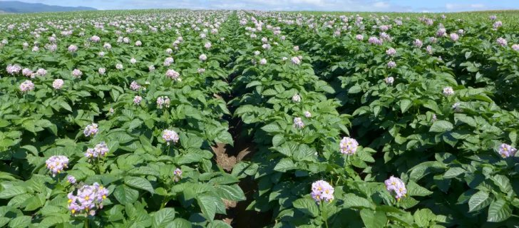
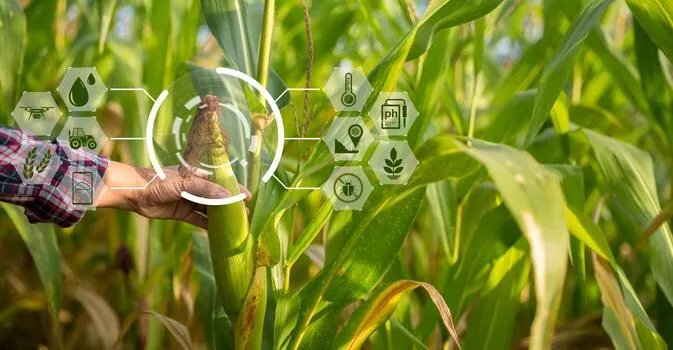
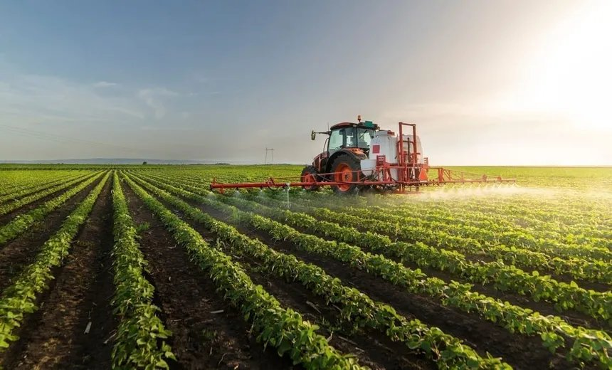
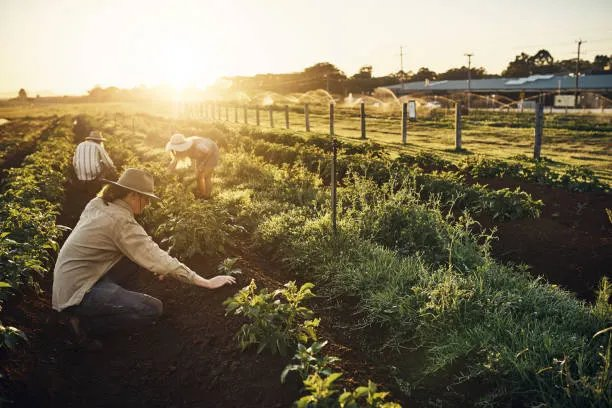
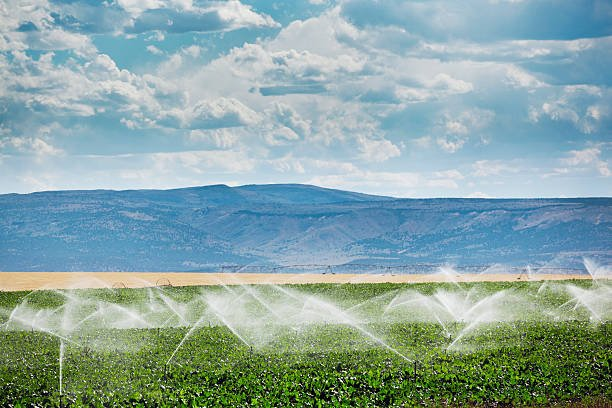

Your Farm Is An Asset. We Turn It Into A Business.
Prakut is a farm transformation company helping landowners, farm businesses, and agricultural enterprises improve farm operations.
Assess land quality, utilisation, irrigation and long-term farm potential.
Owning farmland is easy. Running it well isn't.
- Poor operational visibilityOwners cannot see what is happening day to day.
- Unplanned crop decisionsPlanting follows habit instead of land and market signals.
- Weak farm economicsCosts, yields and returns are rarely viewed together.
- Underutilised landValuable land remains idle or poorly allocated.
- Labour inefficiencyRoles and accountability are unclear on the ground.
- Poor documentationImportant decisions disappear into scattered notes.
- Lack of SOPsWork depends on memory rather than repeatable systems.
- Single-source revenueOne crop or season carries too much risk.
- Unclear market strategyProduction starts before the route to market is clear.
- Infrastructure gapsAssets are not planned around the operating model.
- Reactive decision-makingTeams respond to problems instead of anticipating them.
The result? A valuable agricultural asset can remain an underperforming business. That's where Prakut comes in.
A clearer path from potential to performance.
Prakut brings land, operations, people, data, crops and revenue into one connected view. The result is a farm that can be understood, managed and improved with intention.
Learn MoreEvery farm has a way forward.
Move through the six areas we connect to make farm performance more predictable.
Assess land quality, utilisation, irrigation and long-term farm potential.
Practical capability for every stage of the farm.
Farm Health
Start with a clear view of the asset.
→Farm Operations
Build systems that work every day.
→
Crop Planning
Match production to land and market.
→
Farm Technology
Make better decisions with useful data.
→
Market Strategy
Design routes to value beyond the harvest.
→
Revenue Growth
Turn a working farm into a stronger business.
→From reactive to intentional.
Before
- Reactive decisions
- Poor visibility
- Underutilised land
- Unclear economics
After
- Planned operations
- Data visibility
- Better land utilisation
- Improved profitability
Know the health of your farm before you invest another rupee.
An independent assessment of your farm's land, water, soil, crops, infrastructure, operations, economics, risks, and opportunities — before you commit further capital or time.
The audit isn't the end product. It's the beginning.
Understand the farm
Before anything changes, we establish exactly where things stand.
Build the roadmap
Findings become a plan — what to grow, how to earn, what to build.
Put the plan into action
We run the operation, not just recommend it.
Improve farm economics
Once the base is stable, we build on it.
Not a list of services. Three ways we work with you.
Farm Transformation
For owners who want to change the way their farm operates.
- Farm Health Audit
- Due Diligence
- Farm Strategy
- Farm Development
- Revenue Diversification
Farm Operations
For owners who want Prakut to help run the farm.
- Farm Management
- SOP Development
- Workforce Management
- Asset Management
- Procurement
Farm Intelligence
Technology built around the farm, not the other way around.
- Prakut One
- Farm Data
- GIS
- IoT
- Decision Support
Built for people who take their agricultural assets seriously.
NRI & Absentee Landowners
You need visibility, accountability, and someone on the ground.
Institutional & Large-Scale Growers
You need operational discipline across large agricultural assets.
FPOs & Agricultural Organisations
You need systems to coordinate production, people, data, and markets.
Technology built around the farm.
Prakut One is the digital platform we're building to bring farm operations, people, assets, activities, finances, and decisions into one place — built for agriculture, and for the way farms actually work.
We don't believe technology fixes farms. Better decisions do.
Technology is useful only when it changes what happens on the farm.
A farm is not just land. It's an operating business.
Land → Crops → Harvest
Land → Assets → Operations → Production → Markets → Revenue → Profitability
The goal isn't a more complicated farm. It's a more predictable one.
| Area | What We Improve |
|---|---|
| Land | Land utilisation |
| Water | Water security & efficiency |
| Crops | Crop productivity |
| People | Labour & accountability |
| Process | SOPs & workflows |
| Infrastructure | Farm infrastructure |
| Technology | Digital visibility |
| Markets | Market access |
| Revenue | Multiple income streams |
| Economics | Cost & profitability |
From underutilised land to an operating farm
An illustrative example of how a Prakut engagement typically unfolds — not a specific client result.
Before
- Large landholding, low utilisation
- No structured operations
- Limited visibility for the owner
Prakut Intervention
- Farm Health Audit
- Farm planning
- SOP implementation
- Crop restructuring
- Revenue strategy
Outcome
- Improved land utilisation
- Better operational visibility
- New revenue streams
- Improved farm economics
General questions
What exactly does Prakut do?+
Prakut transforms farms into income-generating businesses. We diagnose the farm's condition, design a plan around it, execute the operations on the ground, and work to grow revenue and profitability from there.
How is Prakut different from consultants or agronomists?+
Consultants typically hand over recommendations and step away. Prakut stays for execution — we run the operation and are accountable for the outcome, not just the advice.
What happens after the Farm Health Audit?+
You receive a written assessment covering land, infrastructure, crops, water, operations, economics, and risk, along with a prioritised action plan. Whether you move into Farm Transformation or Farm Operations from there depends on your goals and the farm's fit — there's no pressure to continue.
Why is the audit paid?+
A serious asset decision deserves a serious assessment. A paid audit requires structured fieldwork and economic analysis, keeps both sides aligned, and filters out casual enquiries.
Do you guarantee returns or income?+
No. Prakut does not offer guaranteed returns. We focus on building structurally sound farm economics, which improves predictability and long-term performance — not short-term assurances.
Do I need to travel to India to get started?+
No. The audit and ongoing engagement are designed to run without requiring your physical presence, though you're welcome to visit anytime.
Tell us about your farm.
A few details help us understand where to start — takes about two minutes.

Ready to understand what your farm can become?
Start with a Farm Health Audit and identify the opportunities hiding in your farm.